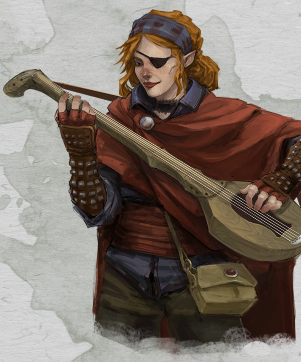

Barde demi-elfe niv 1

Ilona la Borgne
Barde 1 (0 PX)
Demi-elfe (f), neutre
Artiste (conteur)
[ CARACTÉRISTIQUES ]
For 10 (+0) Dex 16 (+3) Con 14 (+2)
Int 12 (+1) Sag 8 (-1) Cha 16 (+3)
[ MAÎTRISES ]
Bonus de maîtrise +2
Sauvegardes Dex +5, Cha +5
Compétences Acrobaties +5, Investigation +3, Perception +1, Perspicacité +1, Persuasion +5, Représentation +5, Tromperie +5 (Perception passive 11)
Armes armes courantes, arbalète de poing, épée longue, épée courte, rapière
Armures armures légères
Outils luth, flûte, lyre, viole, kit de déguisement
Langues commun, elfique, halfelin
[ COMBAT ]
pv 10 ; DV 1d8
Init +3 ; Vitesse 9 m
CA 14 (armure de cuir 11, Dex +3)
Rapière. Corps à corps : +5 (1d8+3 perforant ; finesse)
Dague. Corps à corps : +5 (1d4+3 perforant ; finesse, légère, lancer (portée 6 m/18 m))
[ SORTS DE BARDE ]
Caractéristique d'incantation Charisme ; DD de sauvegarde des sorts 13 ; Bonus d'attaque des sorts +5
Emplacements 2
Sorts connus (2) / 4
- Niv 0 : illusion mineure, main de mage
- Niv 1 : charme-personne, déguisement, murmures dissonants, texte illusoire
[ CAPACITÉS & TRAITS ]
Inspiration bardique (1d6 - 3/repos long)
Vision dans le noir (18 m)
Ascendance féerique (avantage aux JdS contre les effets de charme et la magie ne peut pas vous endormir)
Polyvalence *
À la demande du public
[ ÉQUIPEMENT ]
Rapière, dague, armure de cuir, luth, flûte, coffre, étui à cartes ou parchemins (2), vêtements fins, encre/bouteille, plume d'écriture, lampe, huile/fiole (2), papier (5), parfum/fiole, cire à cacheter, savon, vêtements/costume, bourse, cadeau d'un admirateur
Coût de l'équipement 133.24 po ; Poids de l'équipement 28 kg
15 po
Poids des pièces 0.15 kg
[ PERSONNAGE ]
Taille M / 1,75 m / 65 kg ; Âge 17 ans (âge apparent 17)
Yeux marron ; Peau claire ; Cheveux roux
Trait Je connais une histoire en rapport avec chaque situation.
Idéal Peuple. J'aime voir des sourires sur les visages qui m'entourent lorsque je fais ma représentation. C'est tout ce qui m'importe.
Lien Je retrouverai celui qui m'a pris un oeil et me vengerai.
Défaut J'ai un jour caricaturé un noble, lequel cherche encore à voir ma tête au bout d'une pique. C'était une erreur que je vais probablement répéter.
Passé du personnage « Il y a bien longtemps, par une nuit d'hiver glaciale, une silhouette inquiétante s'avançait dans l'obscurité ». C'est ainsi que pourrait débuter l'une des nombreuses histoires racontées par Ilona à la taverne du hibou. Du haut de ses 17 ans, elle était passée maître dans l'art de la narration et émerveillait sans cesse ses auditeurs, lesquels la remerciaient en général d'une petite pièce ou d'une bière fraîche, selon l'ambiance de la soirée. Ilona n'était pas seulement douée pour inventer toutes sortes d'intrigues plus passionnantes les unes que les autres. Elle agrémentait chacune d'elles de petites mélodies qu'elle composait elle-même et interprétait avec son luth. Tantôt joyeuse, tantôt triste, parfois effrayante, la musique contribuait toujours parfaitement à l'immersion dans son récit. Cependant, la vie d'Ilona ne fut pas toujours aussi facile.
Quand elle avait 13 ans, un groupe de bandits orcs vint piller et démolir la maison dans laquelle ses parents et elle habitaient. Pour pousser les autres habitants du village à coopérer, les orcs traînèrent toute la famille sur la place du marché, et leur chef tua froidement ses parents sous ses yeux. Dévastée, Ilona fondit en larmes en les voyant s'écrouler au sol. Le monstrueux chef orc s'avança alors vers elle, et la gifla de toute ses forces pour qu'elle arrête de gémir. Le coup fut si violent que la vision d'Ilona s'assombrit, juste avant qu'elle ne s'évanouisse. Plusieurs jours plus tard, elle se réveilla dans un hospice d'une ville voisine. Elle y avait été conduite par des fermiers de son village afin qu'un soigneur puisse guérir ses blessures. Si Ilona parvint à se lever et à marcher sans mal, elle avait perdu l'usage de son œil gauche à tout jamais.
Depuis ce jour, elle jura de se venger de ce monstre qui lui avait tant pris, même si cela devait lui prendre la vie entière. C'est ainsi qu'elle se mit à fréquenter chacune des tavernes de la ville, afin de glaner la moindre petite information qui lui permettrait de retrouver le bourreau de ses parents.
[ ÉVOLUTION ]
Les compétences maîtrisées et les sorts choisis reflètent le parcours d'Ilona depuis le meurtre de ses parents.
Au niveau 2, ajoutez le sort héroïsme aux sorts connus et les capacités Touche-à-tout et Chant de repos (ses pv passent à 17 et ses DV à 2d8).
Au niveau 3, ajoutez le sort suggestion aux sorts connus, choisissez le collège du Savoir et ajoutez la capacité Expertise (ses pv passent à 24 et ses DV à 3d8).
Stat et histoire de yotus